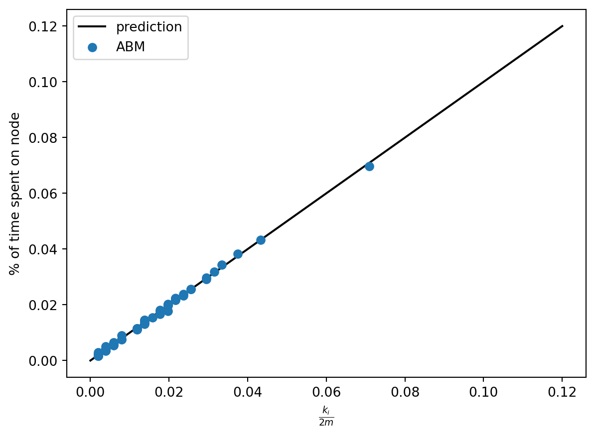
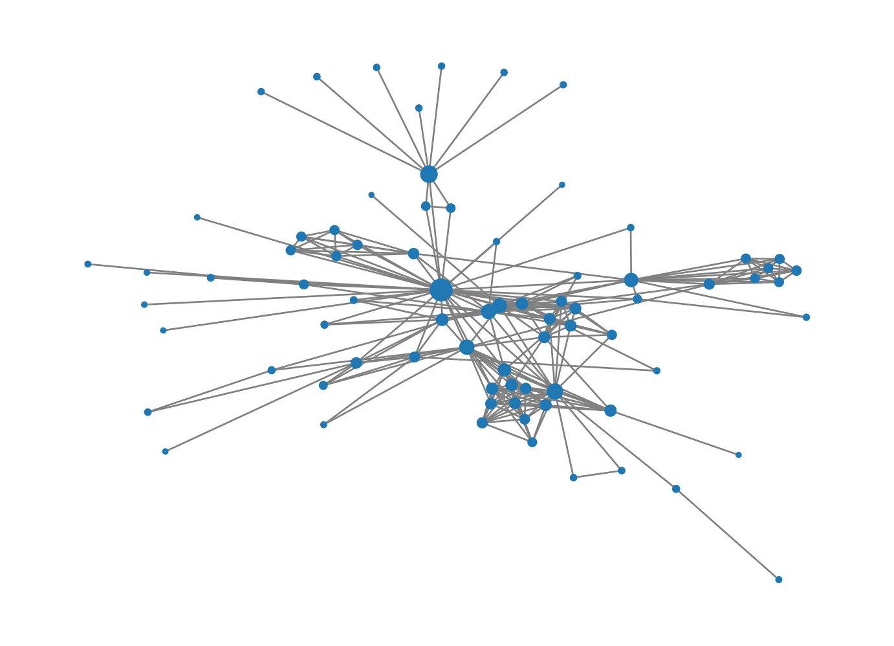

Many of the problems that interest us in networks relate to agents making actions or decisions on network structures. While in some cases we can develop relatively complete mathematical descriptions of systems like these, in other cases we need to perform computational simulations and experiments. In this set of notes, we’ll focus on basic techniques for agent-based modeling (ABM) in Python.
In agent-based modeling, we construct a model by defining a set of agents and the rules by which those agents interact. There are many good software packages for agent-based modeling, perhaps the most famous of which is NetLogo. In this class, we’ll use one of several agent-based modeling frameworks developed for Python, called mesa. Mesa includes a number of useful tools for constructing, analyzing, and visualizing agent-based models. You can install Mesa using
at the command line or by searching for and installing it in the Environments tab of Anaconda Navigator. Once you’ve installed Mesa, you are ready to use its tools.
Components of an Agent-Based Model
Let’s start with some vocabulary. A Mesa model has several components:
An agent is a representation of the individuals who make decisions and perform actions. Agents have a step() method that describes their behavior.
The grid is a representation of relationships between individuals. The grid can be, say, a 2d rectangle, in which case we could imagine it representing space. In this class, we’ll of course use a network grid, in which we can use a network to specify relationships.
The scheduler determines the order in which agents act. In a synchronous model, all agents act simultaneously. In an asychronous model, agents act one at a time, in either a fixed or a random order. The schedule also has a step() method that calls the step() method of the agents according to the schedule.
The data collector helps us gather data on our simulation.
First Example: Simple Random Walk
For our first agent-based model, we are going to code up an agent-based implementation of the simple random walk. There are lots of reasonable ways to do this, and Mesa is actually a bit of overkill for this particular problem. Still, we’ll learn some important techniques and concepts along the way.
Let’s start by importing several tools that we’ll use.
Show code
from mesa import Model, Agent # core mesa classesfrom mesa.space import NetworkGrid from mesa.time import BaseScheduler from mesa.datacollection import DataCollectorimport networkx as nx # for the gridimport numpy as np # computationsfrom matplotlib import pyplot as plt # visualizing output
Since this is a networks class, we’ll use a network-based grid. We imported the capability to do that above as the mesa.space.NetworkGrid class. Of course, we need a network to use. For this example, we’ll use the Les Miserable Graph, which is built in to NetworkX:
Show code
G = nx.les_miserables_graph()G = nx.convert_node_labels_to_integers(G)
We’ll soon use this to create our model.
The Model Class
To specify an ABM in Mesa we need to define two classes: a class describing the model and a class describing each individual agent. The main responsibilities of the model class are to describe:
How the model is initialized, via the __init__() method. This includes:
Creating any agents needed.
Placing those agents on the grid and placing them in the schedule.
Defining any data collection tools.
What happens in a single time-step of the model, via the step() method.
The model class actually has a lot more functionality than this. Fortunately, we don’t usually need to define this functionality, because the model class we create inherits the needed functionality from mesa.Model (which we imported above). Here’s our SRWModel class. The syntax can look a little complicated whenever we work with a new package, but what’s going on is fundamentally simple.
Show code
class RWModel(Model):# model setupdef__init__(self, G, agent_class, **kwargs):super().__init__()self.schedule = BaseScheduler(self) # time structureself.grid = NetworkGrid(G) # space structure# create a single agent who will walk around the graph# we haven't defined SWRAgent yet# the agent has a name and is associated to the model agent = agent_class(self, **kwargs)# place the agent at a random node on the graph node =self.random.choice(list(G.nodes))self.grid.place_agent(agent, node)# place the agent into the scheduleself.schedule.add(agent)# data collection. Here we're just going to collect the # current position of each agentself.collector = DataCollector( agent_reporters = {"node" : lambda a: a.pos } )# this is where a timestep actually happens# once we've set up the model's __init__() method# and the step() method of the agent class, # this is one is usually pretty simpledef step(self):self.schedule.step()self.collector.collect(self)
The Agent Class
Now we’re ready to define what the agent is supposed to do! In the SRW, the agent looks at all nodes adjacent to theirs, chooses one of them uniformly at random, and moves to it. We need to implement this behavior in the step() method. While there are some more mesa functions involved that you may not have seen before, the approach is very simple.
Show code
class SRWAgent(Agent):def__init__(self, model):super().__init__(self, model)self.unique_id ="Anakin Graphwalker"def step(self):# find all possible next steps# include_center determines whether or not we count the # current position as a possibility options =self.model.grid.get_neighborhood(self.pos, include_center =False)# pick a random one and go there new_node =self.random.choice(options)self.model.grid.move_agent(self, new_node)
Note that, in order to get information about the possible locations, and to move the agent, we needed to use the grid attribute of the SRWModel that we defined above. More generally, the grid handles all “spatial” operations that we usually need to do.
Experiment
Phew, that’s it! Once we’ve defined our model class, we can then run it for a bunch of timesteps:
Show code
model = RWModel(G, SRWAgent)for i inrange(100000): model.step()
We can get data on the behavior of the simulation using the collector attribute of the model. We programmed the collector to gather only the position of the walker. There are lots of other possibilities we could have chosen instead.
Now let’s ask: is the simulation we just did lined up with what we know about the theory of the simple random walk? Recall that the stationary distribution\(\pi\) of the SRW is supposed to describe the long-term behavior of the walk, with \(\pi_i\) giving the limiting probability that the walker is on node \(i\). Recall further that the stationary distribution for the SRW is actually known in closed form: it’s \(\pi_i = k_i / 2m\), where \(k_i\) is the degree of node \(i\). So, we would expect this to be a good estimate of the fraction of time that the walker spent on node \(i\). Let’s check this!
Now we can compute the degree sequence and stationary distribution of the underlying graph:
Show code
degs = [G.degree(i) for i in freqs.index]stationary_dist = degs / np.sum(degs)
Finally, we can plot and see whether the prediction lines up with the observation:
Show code
plt.plot([0, .12], [0, .12], color ="black", label ="prediction")plt.scatter(stationary_dist, freqs, zorder =100, label ="ABM")plt.gca().set(xlabel =r"$\frac{k_i}{2m}$", ylabel ="% of time spent on node")plt.legend()

That’s a match!
Variation: PageRank
The reason that we parameterized the RWModel class with the argument agent_class is that we can now implement PageRank just by modifying the agent behavior. Let’s now make a new kind of agent that does the PageRank step:
Show code
class PageRankAgent(Agent):def__init__(self, model, alpha):super().__init__(self, model)self.alpha = alphadef step(self):if np.random.rand() <self.alpha: # teleport options =list(self.model.grid.G.nodes.keys())else: # standard RW step options =self.model.grid.get_neighborhood(self.pos, include_center =False)# pick a random one and go there new_node =self.random.choice(options)self.model.grid.move_agent(self, new_node)
That’s all we need to do in order to implement PageRank in this graph. Let’s go ahead and run PageRank.
Show code
pagerank_model = RWModel(G, PageRankAgent, alpha =0.15)for i inrange(100000): pagerank_model.step()
That’s it! Now we could check the match with the stationary distribution like we did last time. Instead, let’s simply draw the graph.
Show code
walk_report = pagerank_model.collector.get_agent_vars_dataframe()counts = walk_report.groupby("node").size()freqs = counts / np.sum(counts)nx.draw(G, node_size = [2000*freqs[i] for i in G.nodes], edge_color ="grey")

Multi-Agent Models
Now let’s consider our first multi-agent model, the voter model.
In fact, there are many different models that are all called “the” voter model. The one we’ll discuss here is the simplest and most common.
Show code
from mesa.time import RandomActivation class CompartmentalModel(Model):# model setupdef__init__(self, G, agent_class, possible_states = [0,1], state_density = [0.5, 0.5]):self.schedule = RandomActivation(self) # time structureself.grid = NetworkGrid(G) # space structurefor node inlist(G.nodes): state = np.random.choice(possible_states, p = state_density) agent = agent_class(node, self, state)self.grid.place_agent(agent, node)self.schedule.add(agent)self.collector = DataCollector( agent_reporters = {"state" : lambda a: a.state } )def step(self):self.schedule.step()self.collector.collect(self)
for run inrange(10): voter_model = CompartmentalModel(G, CompartmentalAgent, [0, 1], [0.5, 0.5])for i inrange(50): voter_model.step() report = voter_model.collector.get_agent_vars_dataframe() plt.plot(report.groupby("Step").mean())plt.gca().set(xlabel ="Timestep", ylabel ="% of nodes with opinion 1")
/Users/philchodrow/opt/anaconda3/envs/ml-0451/lib/python3.9/site-packages/mesa/agent.py:52: FutureWarning:
The Mesa Model class was not initialized. In the future, you need to explicitly initialize the Model by calling super().__init__() on initialization.
/Users/philchodrow/opt/anaconda3/envs/ml-0451/lib/python3.9/site-packages/mesa/agent.py:52: FutureWarning:
The Mesa Model class was not initialized. In the future, you need to explicitly initialize the Model by calling super().__init__() on initialization.
/Users/philchodrow/opt/anaconda3/envs/ml-0451/lib/python3.9/site-packages/mesa/agent.py:52: FutureWarning:
The Mesa Model class was not initialized. In the future, you need to explicitly initialize the Model by calling super().__init__() on initialization.
/Users/philchodrow/opt/anaconda3/envs/ml-0451/lib/python3.9/site-packages/mesa/agent.py:52: FutureWarning:
The Mesa Model class was not initialized. In the future, you need to explicitly initialize the Model by calling super().__init__() on initialization.
/Users/philchodrow/opt/anaconda3/envs/ml-0451/lib/python3.9/site-packages/mesa/agent.py:52: FutureWarning:
The Mesa Model class was not initialized. In the future, you need to explicitly initialize the Model by calling super().__init__() on initialization.
/Users/philchodrow/opt/anaconda3/envs/ml-0451/lib/python3.9/site-packages/mesa/agent.py:52: FutureWarning:
The Mesa Model class was not initialized. In the future, you need to explicitly initialize the Model by calling super().__init__() on initialization.
/Users/philchodrow/opt/anaconda3/envs/ml-0451/lib/python3.9/site-packages/mesa/agent.py:52: FutureWarning:
The Mesa Model class was not initialized. In the future, you need to explicitly initialize the Model by calling super().__init__() on initialization.
/Users/philchodrow/opt/anaconda3/envs/ml-0451/lib/python3.9/site-packages/mesa/agent.py:52: FutureWarning:
The Mesa Model class was not initialized. In the future, you need to explicitly initialize the Model by calling super().__init__() on initialization.
/Users/philchodrow/opt/anaconda3/envs/ml-0451/lib/python3.9/site-packages/mesa/agent.py:52: FutureWarning:
The Mesa Model class was not initialized. In the future, you need to explicitly initialize the Model by calling super().__init__() on initialization.
/Users/philchodrow/opt/anaconda3/envs/ml-0451/lib/python3.9/site-packages/mesa/agent.py:52: FutureWarning:
The Mesa Model class was not initialized. In the future, you need to explicitly initialize the Model by calling super().__init__() on initialization.